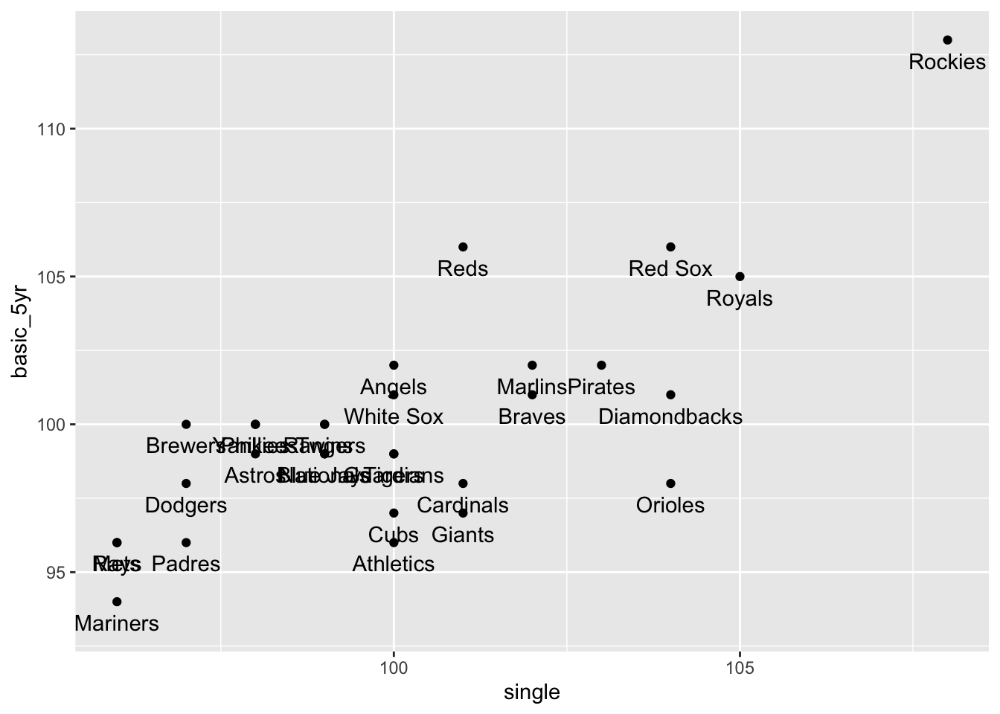
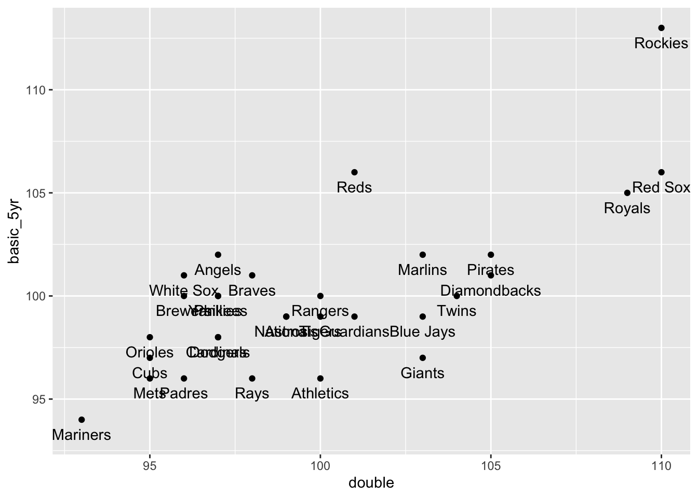
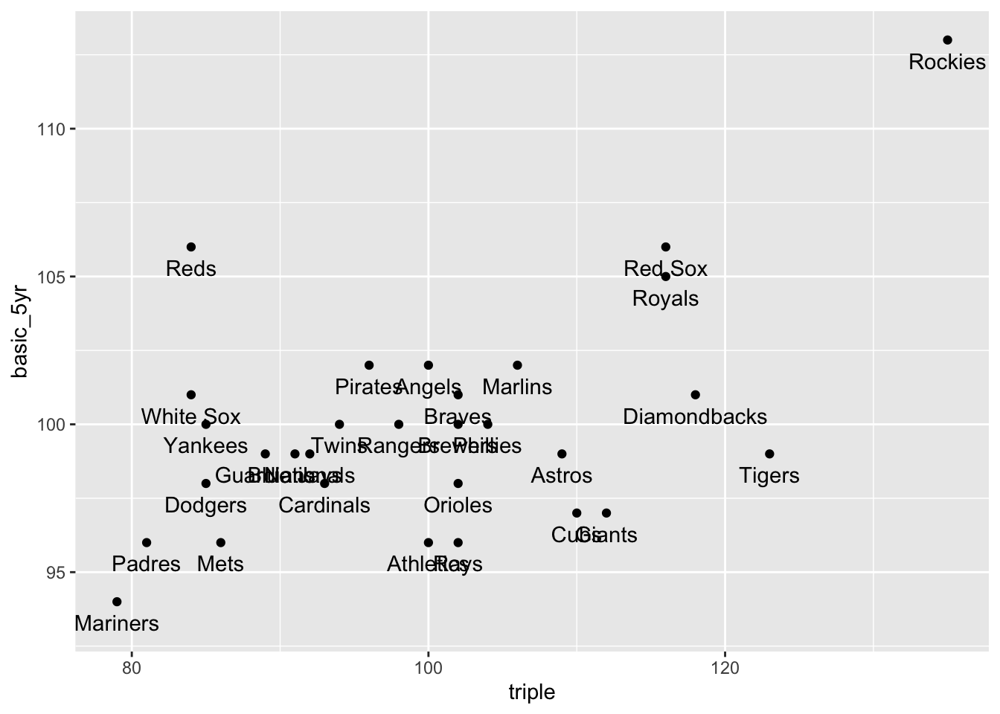
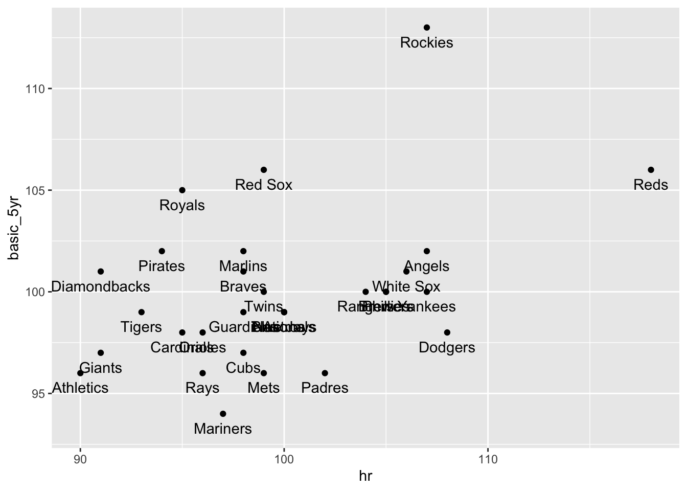
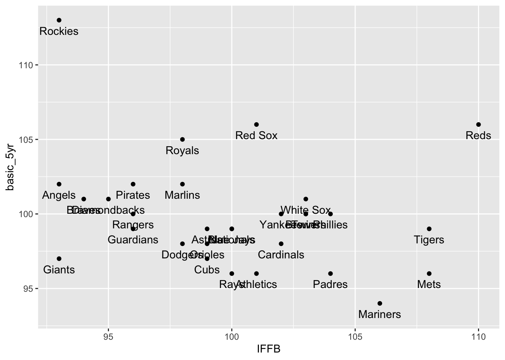
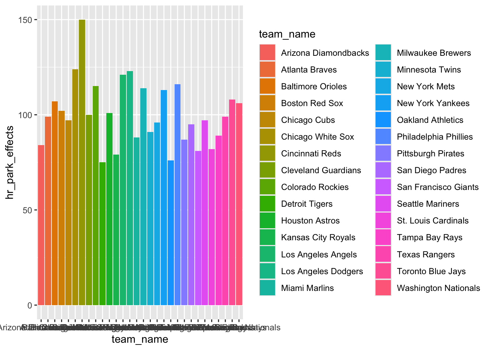
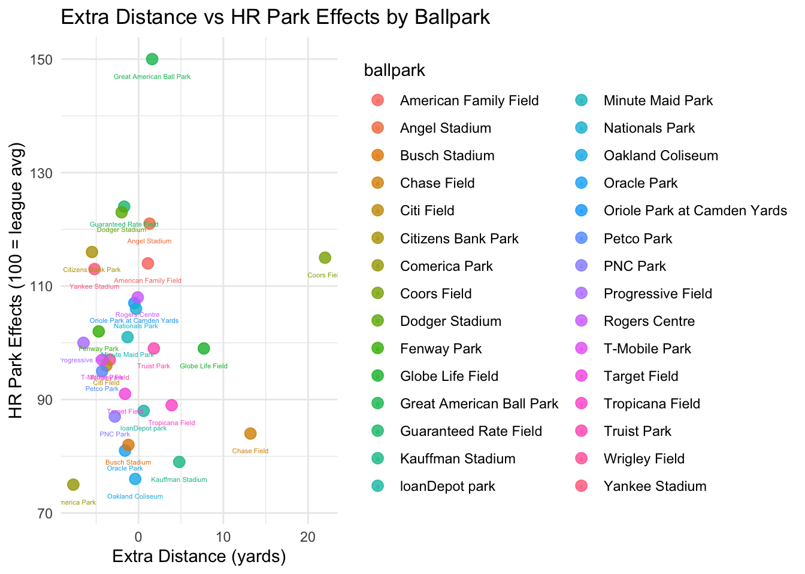

9 Izzy F
season home_team basic_5yr 3yr
Min. :2023 Length:30 Min. : 94.0 Min. : 93.00
1st Qu.:2023 Class :character 1st Qu.: 98.0 1st Qu.: 97.25
Median :2023 Mode :character Median : 99.5 Median :100.00
Mean :2023 Mean :100.0 Mean :100.07
3rd Qu.:2023 3rd Qu.:101.0 3rd Qu.:101.00
Max. :2023 Max. :113.0 Max. :114.00
1yr single double triple
Min. : 92.0 Min. : 96.0 Min. : 93.00 Min. : 79.0
1st Qu.: 96.0 1st Qu.: 98.0 1st Qu.: 97.00 1st Qu.: 89.5
Median : 99.5 Median :100.0 Median : 99.00 Median :100.0
Mean :100.0 Mean :100.1 Mean : 99.97 Mean : 99.8
3rd Qu.:102.8 3rd Qu.:101.8 3rd Qu.:103.00 3rd Qu.:108.2
Max. :115.0 Max. :108.0 Max. :110.00 Max. :135.0
hr so UIBB GB
Min. : 90.00 Min. : 96.00 Min. : 96.00 Min. : 96
1st Qu.: 96.00 1st Qu.: 98.00 1st Qu.: 98.25 1st Qu.: 99
Median : 99.00 Median :100.00 Median :100.00 Median :100
Mean : 99.87 Mean : 99.93 Mean :100.03 Mean :100
3rd Qu.:104.75 3rd Qu.:101.75 3rd Qu.:101.00 3rd Qu.:101
Max. :118.00 Max. :103.00 Max. :103.00 Max. :107
FB LD IFFB FIP
Min. : 96.00 Min. : 96 Min. : 93.0 Min. : 96.00
1st Qu.: 98.25 1st Qu.: 98 1st Qu.: 96.5 1st Qu.: 98.00
Median :100.00 Median :100 Median :100.0 Median :100.00
Mean : 99.93 Mean :100 Mean :100.1 Mean : 99.97
3rd Qu.:101.00 3rd Qu.:101 3rd Qu.:103.0 3rd Qu.:101.75
Max. :104.00 Max. :109 Max. :110.0 Max. :106.00 ── Park Factors data from FanGraphs.com ───────────────────── baseballr 1.6.0 ──ℹ Data updated: 2025-05-06 16:06:26 CDT# A tibble: 6 × 16
season home_team basic_5yr `3yr` `1yr` single double triple hr so UIBB
<int> <chr> <int> <int> <int> <int> <int> <int> <int> <int> <int>
1 2023 Angels 102 101 99 100 97 100 107 102 101
2 2023 Orioles 98 97 94 104 95 102 96 98 98
3 2023 Red Sox 106 104 106 104 110 116 99 98 101
4 2023 White Sox 101 101 99 100 96 84 106 99 102
5 2023 Guardians 99 99 95 100 101 89 98 101 101
6 2023 Tigers 99 102 105 100 100 123 93 98 102
# ℹ 5 more variables: GB <int>, FB <int>, LD <int>, IFFB <int>, FIP <int>ggplot(Park_data_23, aes(x = single, y = basic_5yr)) +
geom_point() +
geom_text(aes(label = home_team), angle = 360, nudge_y = - 0.7)
ggplot(Park_data_23, aes(x = double, y = basic_5yr)) +
geom_point() +
geom_text(aes(label = home_team), angle = 360, nudge_y = - 0.7)
ggplot(Park_data_23, aes(x = triple, y = basic_5yr)) +
geom_point() +
geom_text(aes(label = home_team), angle = 360, nudge_y = - 0.7)
ggplot(Park_data_23, aes(x = hr, y = basic_5yr)) +
geom_point() +
geom_text(aes(label = home_team), angle = 360, nudge_y = - 0.7)
ggplot(Park_data_23, aes(x = IFFB, y = basic_5yr)) +
geom_point() +
geom_text(aes(label = home_team), angle = 360, nudge_y = - 0.7)
── MLB Team Batting data from FanGraphs.com ───────────────── baseballr 1.6.0 ──ℹ Data updated: 2025-05-06 16:06:29 CDT# A tibble: 1,457 × 349
Season team_name Bats xMLBAMID PlayerNameRoute PlayerName playerid Age
<int> <chr> <chr> <int> <chr> <chr> <int> <int>
1 2023 ATL R 660670 Ronald Acuna Jr. Ronald Acuña… 18401 25
2 2023 LAD L 518692 Freddie Freeman Freddie Free… 5361 33
3 2023 LAD R 605141 Mookie Betts Mookie Betts 13611 30
4 2023 ATL L 621566 Matt Olson Matt Olson 14344 29
5 2023 LAA L 660271 Shohei Ohtani Shohei Ohtani 19755 28
6 2023 TEX L 608369 Corey Seager Corey Seager 13624 29
7 2023 TEX R 543760 Marcus Semien Marcus Semien 12533 32
8 2023 SDP L 665742 Juan Soto Juan Soto 20123 24
9 2023 KCR R 677951 Bobby Witt Jr. Bobby Witt J… 25764 23
10 2023 SEA R 677594 Julio Rodriguez Julio Rodríg… 23697 22
# ℹ 1,447 more rows
# ℹ 341 more variables: AgeRng <chr>, SeasonMin <int>, SeasonMax <int>,
# G <int>, AB <int>, PA <int>, H <int>, `1B` <int>, `2B` <int>, `3B` <int>,
# HR <int>, R <int>, RBI <int>, BB <int>, IBB <int>, SO <int>, HBP <int>,
# SF <int>, SH <int>, GDP <int>, SB <int>, CS <int>, AVG <dbl>, GB <int>,
# FB <int>, LD <int>, IFFB <int>, Pitches <int>, Balls <int>, Strikes <int>,
# IFH <int>, BU <int>, BUH <int>, BB_pct <dbl>, K_pct <dbl>, BB_K <dbl>, …Rows: 30 Columns: 14
── Column specification ────────────────────────────────────────────────────────
Delimiter: ","
chr (3): abrev_team_name, team_name, ballpark
dbl (11): left_field, center_field, right_field, min_wall_height, max_wall_h...
ℹ Use `spec()` to retrieve the full column specification for this data.
ℹ Specify the column types or set `show_col_types = FALSE` to quiet this message.# A tibble: 6 × 14
abrev_team_name team_name ballpark left_field center_field right_field
<chr> <chr> <chr> <dbl> <dbl> <dbl>
1 ATL Atlanta Braves Truist … 335 400 325
2 AZ Arizona Diamondb… Chase F… 328 407 335
3 BAL Baltimore Orioles Oriole … 333 400 318
4 BOS Boston Red Sox Fenway … 310 420 302
5 CHC Chicago Cubs Wrigley… 355 400 353
6 CIN Cincinnati Reds Great A… 328 404 325
# ℹ 8 more variables: min_wall_height <dbl>, max_wall_height <dbl>,
# hr_park_effects <dbl>, extra_distance <dbl>, avg_temp <dbl>,
# elevation <dbl>, roof <dbl>, daytime <dbl>
stadium_data |>
ggplot(aes(x = extra_distance, y = hr_park_effects, color = ballpark)) +
geom_point(size = 3, alpha = 0.8) +
geom_text(aes(label = ballpark), nudge_y = - 3, size = 1.5) +
labs(
title = "Extra Distance vs HR Park Effects by Ballpark",
x = "Extra Distance (yards)",
y = "HR Park Effects (100 = league avg)"
) +
theme_minimal()
Rows: 130 Columns: 28
── Column specification ────────────────────────────────────────────────────────
Delimiter: ","
chr (1): last_name, first_name
dbl (27): player_id, year, pa, hit, single, double, triple, home_run, battin...
ℹ Use `spec()` to retrieve the full column specification for this data.
ℹ Specify the column types or set `show_col_types = FALSE` to quiet this message.# A tibble: 6 × 28
`last_name, first_name` player_id year pa hit single double triple
<chr> <dbl> <dbl> <dbl> <dbl> <dbl> <dbl> <dbl>
1 Aguilar, Jesús 542583 2022 507 109 74 19 0
2 Santana, Carlos 467793 2022 506 87 50 18 0
3 Turner, Trea 607208 2022 708 194 130 39 4
4 Benintendi, Andrew 643217 2022 521 140 109 23 3
5 Canha, Mark 592192 2022 542 123 86 24 0
6 Cron, C.J. 543068 2022 632 148 88 28 3
# ℹ 20 more variables: home_run <dbl>, batting_avg <dbl>, slg_percent <dbl>,
# on_base_percent <dbl>, on_base_plus_slg <dbl>, isolated_power <dbl>,
# xba <dbl>, xslg <dbl>, woba <dbl>, xwoba <dbl>, xobp <dbl>, xiso <dbl>,
# wobacon <dbl>, xwobacon <dbl>, bacon <dbl>, xbacon <dbl>, xbadiff <dbl>,
# xslgdiff <dbl>, wobadiff <dbl>, hard_hit_percent <dbl>Player_team_info <- mlb_stats(stat_type = 'season', stat_group = 'hitting', season = 2022) |>
select(player_id, team_name)
head(Player_team_info)── MLB Stats data from MLB.com ────────────────────────────── baseballr 1.6.0 ──
ℹ Data updated: 2025-05-06 16:06:33 CDT# A tibble: 6 × 2
player_id team_name
<int> <chr>
1 643446 New York Mets
2 518692 Los Angeles Dodgers
3 502671 St. Louis Cardinals
4 650333 Minnesota Twins
5 592450 New York Yankees
6 593428 Boston Red Sox Full_22_Hitter_stats <- `2022HitterStats` |>
left_join(Player_team_info, join_by(player_id))
head(Full_22_Hitter_stats)# A tibble: 6 × 29
`last_name, first_name` player_id year pa hit single double triple
<chr> <dbl> <dbl> <dbl> <dbl> <dbl> <dbl> <dbl>
1 Aguilar, Jesús 542583 2022 507 109 74 19 0
2 Santana, Carlos 467793 2022 506 87 50 18 0
3 Turner, Trea 607208 2022 708 194 130 39 4
4 Benintendi, Andrew 643217 2022 521 140 109 23 3
5 Canha, Mark 592192 2022 542 123 86 24 0
6 Cron, C.J. 543068 2022 632 148 88 28 3
# ℹ 21 more variables: home_run <dbl>, batting_avg <dbl>, slg_percent <dbl>,
# on_base_percent <dbl>, on_base_plus_slg <dbl>, isolated_power <dbl>,
# xba <dbl>, xslg <dbl>, woba <dbl>, xwoba <dbl>, xobp <dbl>, xiso <dbl>,
# wobacon <dbl>, xwobacon <dbl>, bacon <dbl>, xbacon <dbl>, xbadiff <dbl>,
# xslgdiff <dbl>, wobadiff <dbl>, hard_hit_percent <dbl>, team_name <chr>